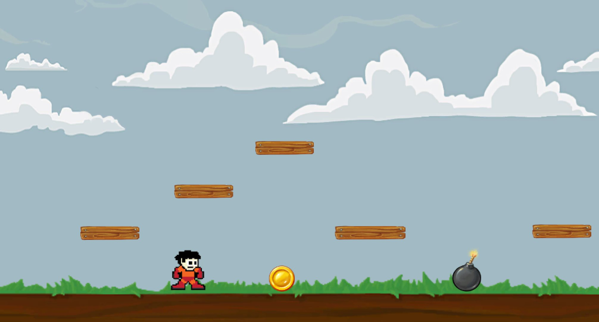
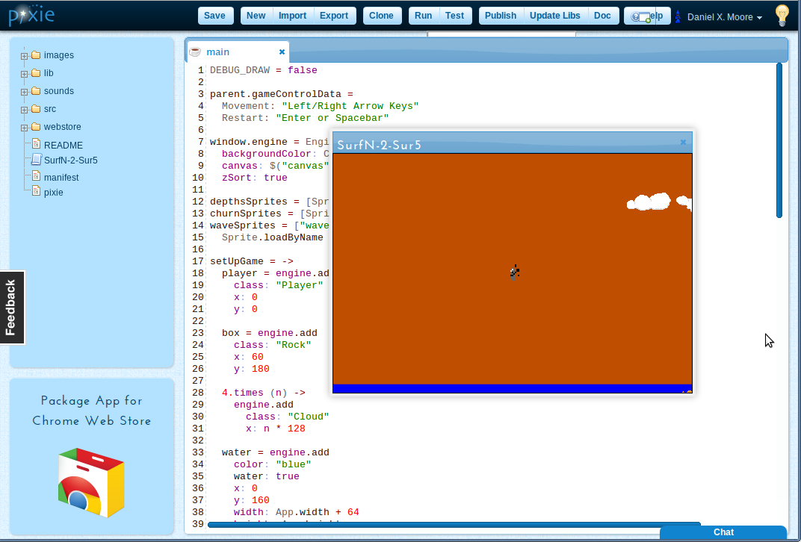
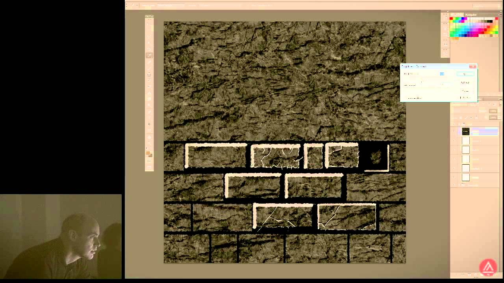

Game Development
What are 2d games?
2D games are also called Platform games. in 2d games the player can run, jump, shoot, collect powers on a platform. even though 2D games are seemingly very outdated, some developers still make 2D games ( especiallly indie developers). And players also keep playing these games either for their nostalgic value or they prefer the 2D style. Characters of 2D games are cartoonish and unrealistic.

2d game development... how to?
Prototyping
Prototyping can happen anytime that the GDD is being built. Prototyping is basically creating a physical game before you start work digitally.
Technologies Used:
• Dice
• Playing Cards
• Grid paper
• Photoshop (for making custom cards or maps)
• Pencils & Pens.
Game Engines
Game engines are the sandbox that you put all of the pieces of your game together. They take care of the collision and interaction between objects and players as well as the networking and lighting.
some popular game engines:
- Game Maker Studio 2: It uses a proprietary programming language called Game Maker Language (GML) which has a reputation of being pretty easy to pick up.
-Unreal Engine: uses C++ and a drag and drop system called "Blueprints" where you can buy modules of code that other programmers have made for a specific feature (like wall climbing) and use it with minimal coding experience necessary.
- Unity: uses C# as the main programming language. Previously they supported a version of Javascript called Unityscript but that has been discontinued.

Texturing
This stage forms a lot of the personality of the art style in a game so it's important to have a good direction for all Texture Artists to follow.
Technologies Used:
- Substance Painter.
- Photoshop.
- GIMP.
Animation
2D animation can be either hand drawn, or digitally drawn allowing for the personal flavor of the artist to really shine through.
2D game design utilizes sprite sheets that have many different frames placed on one sheet and then that is sliced up (by the engine) and played like a flipbook at a certain speed to make the animations.
Tools used:
- Photoshop.
- GIMP.
- Illustrator.
▲